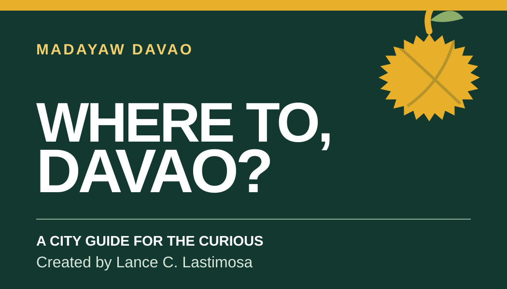
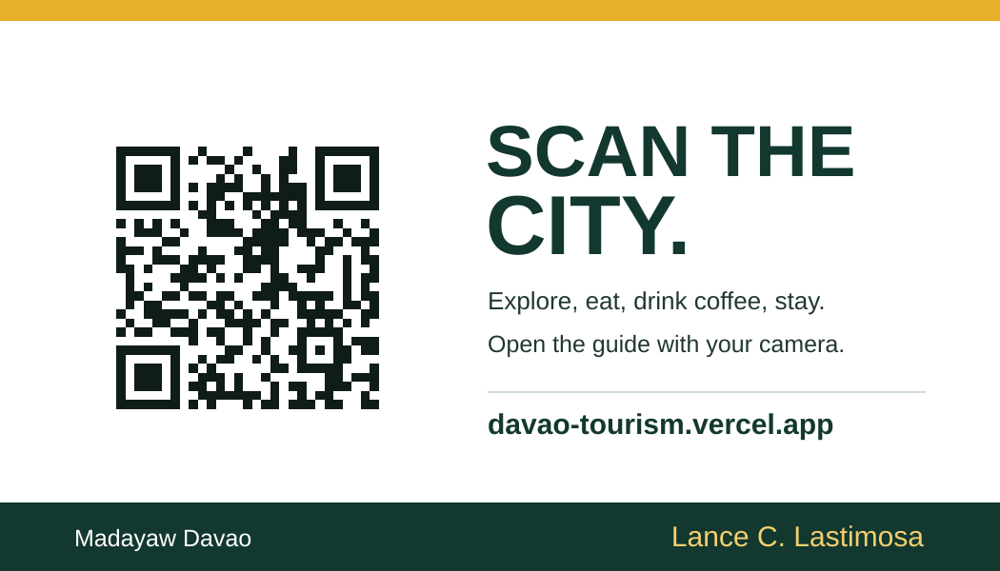

One question. A whole city.
A card made for the ride.
For the visitor asking where to go in Davao, and the driver who knows the city. The QR is a fixed print asset that opens the public guide.
Created by Lance C. Lastimosa




Before you print
- Print each side at 3.5 by 2 inches, at 100% scale. Ask your print shop about its bleed and safe-area settings.
- Keep the white space around the QR clear. Avoid foil, gloss or a dark overlay over the code.
- Print one proof and scan it with two different phones. It should open the public guide at the printed address.
The card has no NFC hardware. Venue information can change, so the guide asks visitors to check current access.